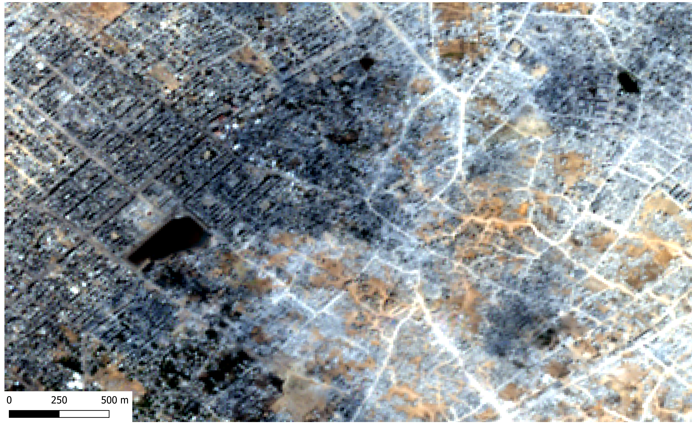
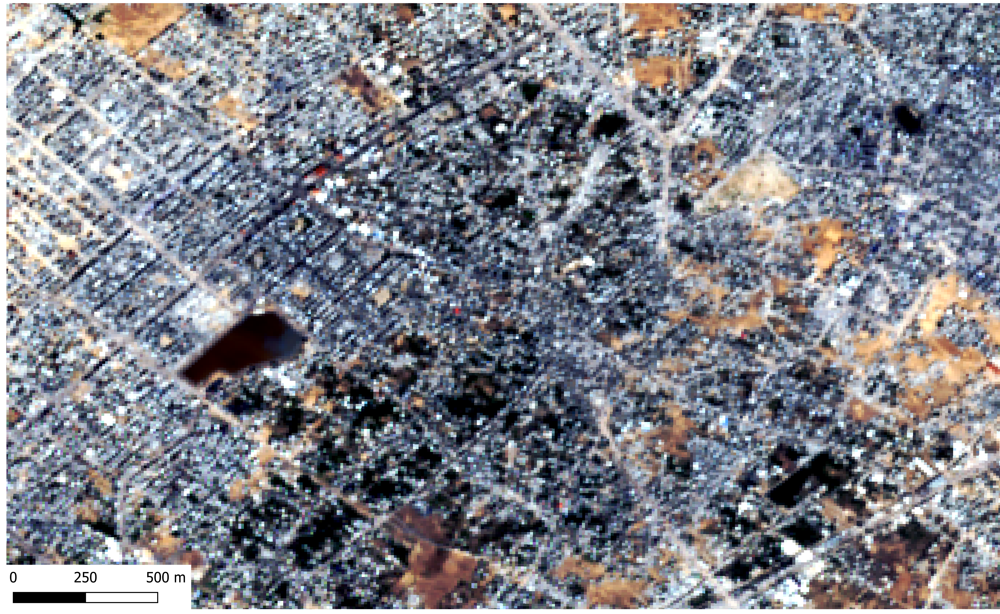
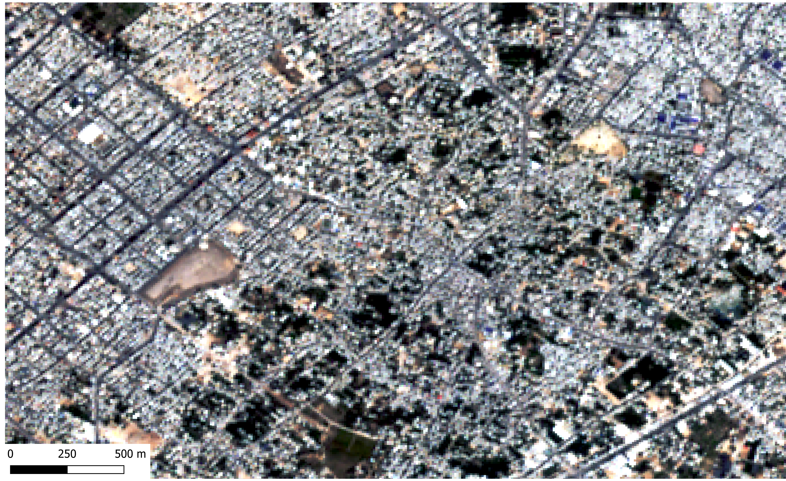

Jabalia, in the North of the Gaza Strip, was a heavily populated area that contained Palestine's largest refugee camp set up in 1948, after the Nakba
Jabalia and the Jabalia refugee camp in specfic, was heavily targetted in Israeli Agression. It was a focus point of Israeli military operations and resulted in massive destruction, death, and dispalcement.
In 2025, Jabalia continued to be destroyed and largely reduced to rubble. Israel continues to launch offensives and ground invasions on what remains of Jabalia.